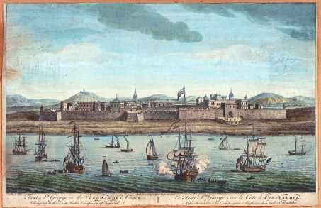

SWITZERLAND’S INDIA: THE SCHAUB FAMILY AND THE EARLY MODERN BRITISH EMPIRE

The eighteenth century saw many Swiss career migrants move to London in search of work. The resulting Anglo-Swiss networks of mobility were supported by mercantile ties, common strategic interests and the Protestant International. At the same time, the metropolis London also provided various opportunities for the Swiss within the expanding British Empire. In India, for instance, Swiss military entrepreneurs, such as Antoine Polier from Lausanne, would make a career for themselves in the British East India Company (EIC) after the Seven Years' War.
The Swiss involvement with the Company in India had been organised through an intermediary in colonial Britain. Luke Schaub (1690–1758) was born in Basel, but moved to Britain in 1714 as a young secretary to Abraham Stanyan, who was British envoy to Bern at the time. Patronised by his compatriot François-Louis de Pesmes de Saint-Saphorin, who was British ambassador to Vienna, Schaub would himself become a diplomat for the British, serving as the ambassador to Paris during the early 1720s. He married the widow of Saint-Saphorin’s late son, the Huguenot Marguerite Ligonnier de Buisson from Lausanne, who owned substantial colonial capital through her shares in the South Sea Company, as a copy of their marriage contract held at Basel University Library reveals, largely securing the family’s financial fortune. In 1720, Schaub was knighted by George I in Hanover. After the ceremony, he would befriend John Craggs, the director of the South Sea Company, which was heavily invested in the transatlantic slave trade.
The political background was favourable to the emigration of continental European mercenaries. Anglo-French military and economic competition in the Carnatic Wars, which formed part of the global Seven Years' War, increased demand for troops on the Coromandel coast in the southeast of the Indian subcontinent. The European armies were transnational in character, including French, English, sepoy (i.e., Indian soldiers), Irish, Scottish, German and Swiss personnel, calling into question the view that continental European migrants only served as “British assistants.” At the same time, there are striking similarities to the imperial formations in Mughal India and Bourbon France, as Seema Alavi has recently pointed out. The Mughal polity became more decentralised during the early eighteenth century, with the French and the British entering various diplomatic alliances with the rulers of successor states such as Hyderabad and Arcot in South India. Meanwhile, the war depleted French state finances, and led to an exodus of talent to India. French and Swiss-French Protestants from Lyon, Savoy and Lausanne in particular would play a major role both as military entrepreneurs and as collectors and patrons of Indian art and scholarship in British India after the war.
With his vast European network of information, Schaub played a crucial role as a recruiter of Swiss troops for the British Empire. In 1751, Schaub brokered a deal with William Mabbot, the director of the EIC, by organising four regiments of Swiss troops for the British at Fort St. George in Madras (today Chennai). One of the regiments was led by his nephew, the colonel John Henry Schaub, who acted as one of Schaub’s recruiters of soldiers in the Old Swiss Confederacy. The Swiss cantons have recently been described as a “hinterland” for recruiters of the French, British and Dutch companies during the long eighteenth century. In this case, Schaub’s nephew and other Swiss officers who had signed a contract with Schaub recruited the young men, leading to tensions with Swiss authorities. Meanwhile, Schaub himself resided safely in London as a “third party,” where he directed affairs by correspondence.
The colonel and his Swiss regiment would later come into French captivity in India. After his release, Schaub fled the Indian subcontinent and returned to Basel. Other Swiss soldiers from the regiments would go on fighting at the decisive battle of Plassey in 1757 under Robert Clive, where the EIC army fought Siraj-ud-Daulah, the nawab (ruler) of Bengal, and its “company-state” ultimately became a major territorial power in India. Some of the Swiss “returnees” from India have been well documented by historians, such as Jean François Paschoud from Daillens or Daniel Frischmann from Basel. The soldiers often returned with substantial wealth, and the Basel Historical Museum holds a collection of such objects which were brought back from India.
Anglo-Swiss soldiers in India took part in what Sanjay Subrahmanyam has famously called Europe’s India, the multifaceted (and often contradictory) bundle of intellectual interactions and encounters between India and Europe in the early modern period. To study the Swiss (and the European) entanglement in the complex political and commercial environment of the Carnatic Wars, one should heed Subrahmanyam’s call for “a close attention to context.” Their story is not only one of Swiss colonialism or a Swiss experience of India, but also one of a much broader system of diplomatic, military and economic exchanges between Indian, French, British and a variety of continental European actors. This is the story which I hope to tell in my future research, Switzerland’s India – which is also European, and Indian, and more than the sum of its parts.
Philippe Bernhard Schmid